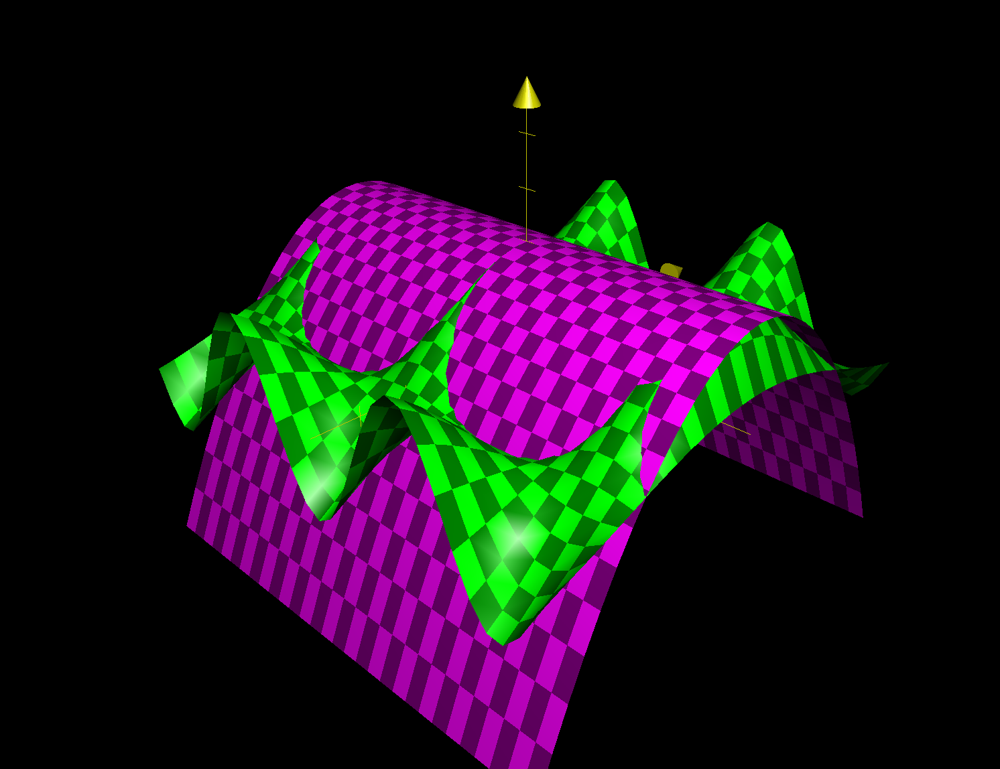

Backlinks
1 Roofs Number 2
Based on the setup of the problem, we could derive the following figure.

Based on the labelled axis, and therefore the derived distances, we could pick the following three points to describe this plane:
\begin{equation} \begin{cases} (0,0,10) \\ (0,\sqrt{20^2-5^2},15) \\ (\sqrt{30^2-10^2},\frac{5\sqrt{20^2-12^2}}{6},10) \\ \end{cases} \end{equation}Most of the points are explanatory by observing the supplements drawn above, though the last point requires some additional attention. To deduct the second point — a point with different \(x\) and \(y\) values than the first, though with the same \(z\) value — we needed to leverage similar triangles on the "right" edge of the building.
We draw a chord on the right edge (as drawn in the figure above), setting its \(z\) value (i.e. length) to be \(10\). Then, we leverage the similar triangle between it and the larger right triangle that forms the whole side to result in the following ratio for its bottom-length (\(y\) value):
\begin{equation} \frac{small\ triangle}{large\ triangle} = \frac{10}{12} = \frac{x}{\sqrt{20^2-12^2}} \end{equation}We therefore apply the cross-product, solve, and simplify to result in the \(y\) value of the third point.
Finally, we calculate the slope of the roof. Along the \(yz\) direction, the slope is \(\frac{5}{\sqrt{20^2 - 5^2}}\) by leveraging the first of the two points in the set. Along the \(xy\) direction, the slope is \(\frac{5\sqrt{20^2-12^2}}{6\sqrt{30^2-10^2}}\). Furthermore, the y-intercept of the function (value at \((0,y,0)\)) is \(y=10\) as indicated clearly by the figure.
Hence, the following would therefore be the equation for the roof
\begin{equation} z = x\frac{5\sqrt{20^2-12^2}}{6\sqrt{30^2-10^2}} + y\frac{5}{\sqrt{20^2 - 5^2}} + 10 = \frac{40}{3\sqrt{30^2-10^2}} + y\frac{5}{\sqrt{20^2 - 5^2}} + 10 \end{equation}1.1 Slope in the middle in various directions
Then, standing on the roof, directly in the middle
As the function we are modeling is a plane, the gradient is the same in all directions. As such the gradient of the function is as follows:
\begin{equation} \begin{bmatrix} \frac{40}{3\sqrt{30^2-10^2}} \\ \frac{5}{\sqrt{20^2-5^2}} \\ \end{bmatrix} \end{equation}1.1.1 Facing directly down
Facing directly down (towards the front), we dot the direction vector down versus the gradient deducted above.
\begin{equation} \begin{bmatrix} \frac{40}{3\sqrt{30^2-10^2}} \\ \frac{5}{\sqrt{20^2-5^2}} \\ \end{bmatrix} \cdot \begin{bmatrix} 0 \\ -1 \end{bmatrix} = \frac{-5}{\sqrt{20^2-5^2}} \end{equation}The slope at this direction is therefore \(\frac{-5}{\sqrt{20^2-5^2}} \approx -14.47^{\circ}\)
1.1.2 Facing towards one of the shorter sides
Facing towards the "left" on the above figure (i.e. the short side shared by \(10\) and \(15\)), we again dot the direction vector with the gradient above.
\begin{equation} \begin{bmatrix} \frac{40}{3\sqrt{30^2-10^2}} \\ \frac{5}{\sqrt{20^2-5^2}} \\ \end{bmatrix} \cdot \begin{bmatrix} -1 \\ 0 \end{bmatrix} = \frac{-40}{3\sqrt{30^2-10^2}} \end{equation}The slope at this direction is therefore \(\frac{-40}{3\sqrt{30^2-10^2}} \approx -25.24^{\circ}\)
1.1.3 Facing towards the highest point
To figure this result, we first need to deduct the points between the center and the highest point. The highest point is located at \((0,16)\), as demonstrated on the figure. This is simply the projection of that point to the flat plane deducted using trigonometry.
The location that we are standing on (the "middle") is simply half of the side lengths. That is: \((\frac{\sqrt{30^2-10^2}}{2}, 8)\).
We then proceed to find the vector pointing from the center to the high point by subtracting the two coordinates and normalizing.
The unnormalized vector is:
\begin{equation} \begin{bmatrix} \frac{-\sqrt{30^2-10^2}}{2} \\ 8 \end{bmatrix}=\begin{bmatrix} -10\sqrt{2} \\ 8 \end{bmatrix} \end{equation}Its magnitude is: \(\sqrt{264} = 2\sqrt{66}\).
Therefore, normalizing the vector, we result in:
\begin{equation} \begin{bmatrix} \frac{-5}{\sqrt{33}} \\ \frac{4}{\sqrt{66}} \\ \end{bmatrix} \end{equation}as the direction vector.
We finally, then, dot the original gradient with this vector to result in the incline.
\begin{equation} \begin{bmatrix} \frac{40}{3\sqrt{30^2-10^2}} \\ \frac{5}{\sqrt{20^2-5^2}} \\ \end{bmatrix} \cdot \begin{bmatrix} \frac{-5}{\sqrt{33}} \\ \frac{4}{\sqrt{66}} \\ \end{bmatrix} = \frac{4}{3\sqrt{110}}-\frac{10}{3\sqrt{66}} \end{equation}The slope at this direction is therefore \(\frac{4}{3\sqrt{110}}-\frac{10}{3\sqrt{66}} = 15.82^{\circ}\).
1.1.4 Facing an Arbitrary Slope
We set the desired slope to be \(\theta^{\circ}\). Therefore, the desired slope value we wish to achieve would be \(\tan(\theta)\).
Meaning, we wish for the following equality
\begin{equation} \begin{bmatrix} \frac{40}{3\sqrt{30^2-10^2}} \\ \frac{5}{\sqrt{20^2-5^2}} \\ \end{bmatrix} \cdot \begin{bmatrix} \cos(\phi) \\ \sin(\phi) \\ \end{bmatrix} = \frac{40}{3\sqrt{30^2-10^2}}\cos(\phi) + \frac{5}{\sqrt{20^2-5^2}}\sin(\phi) = \tan{\theta} \end{equation}Therefore, taking the second part of this expression and solving a statement for \(\phi\) for \(\theta\):
\begin{align} \frac{40}{3\sqrt{30^2-10^2}}\cos(\phi) + \frac{5}{\sqrt{20^2-5^2}}\sin(\phi) = \tan{\theta} \end{align}For ease of computation, we set:
\begin{equation} \begin{cases} A= \frac{40}{3\sqrt{30^2-10^2}}\\ B= \frac{5}{\sqrt{20^2-5^2}}\\ C = \tan{\theta} \end{cases} \end{equation}This expression could therefore be simplified to:
\begin{align} &A\cos(\phi) + B\sin(\phi) = C\\ \Rightarrow\, &\frac{A\cos(\phi) + B\sin(\phi)}{\sqrt{A^2+B^2}} = \frac{C}{\sqrt{A^2+B^2}} \\ \Rightarrow\, &\frac{A\cos(\phi)}{\sqrt{A^2+B^2}} + \frac{B\sin(\phi)}{\sqrt{A^2+B^2}} = \frac{C}{\sqrt{A^2+B^2}} \end{align}Based on the following trig identity:
\begin{equation} \sin(X+Y) = \sin(X)\cos(Y) + \sin(Y)\cos(X) \end{equation}And setting \(Y = \phi\), \(\sin(X) = \frac{A}{\sqrt{A^2+B^2}}\), \(\cos(X) = \frac{B}{\sqrt{A^2+B^2}}\):
\begin{equation} \sin(X+Y) = \frac{A\cos(\phi)}{\sqrt{A^2+B^2}} + \frac{B\sin(\phi)}{\sqrt{A^2+B^2}} = \frac{C}{\sqrt{A^2+B^2}} \end{equation}Solving for \(Y\), therefore:
\begin{align} &\sin(X+Y) = \frac{A\cos(\phi)}{\sqrt{A^2+B^2}} + \frac{B\sin(\phi)}{\sqrt{A^2+B^2}} = \frac{C}{\sqrt{A^2+B^2}}\\ \Rightarrow &\, X+Y = \arcsin(\frac{C}{\sqrt{A^2+B^2}}) \\ \Rightarrow &\, Y = \arcsin(\frac{C}{\sqrt{A^2+B^2}}) - X \\ \Rightarrow &\, Y = \phi = \arcsin(\frac{C}{\sqrt{A^2+B^2}}) - \arcsin(\frac{A}{\sqrt{A^2+B^2}}) \end{align}For the resulting expression, we then answer the two sub-questions:
- For \(\theta = 9^{\circ}\), we must turn to angle of \(\approx -44.15^{\circ}\).
- For \(\theta = 10^{\circ}\), we must turn to angle of \(\approx -42.14^{\circ}\).
2 High Dimensional Taylor Series
Do a 2D Taylor Series!
\begin{align} f: \mathbb{R}^2 \to \mathbb{R}^1 \\ f(x,y) = \cos(x)\cos(3y) \end{align}
This function is shaped similar to an slightly upscaled (by \(3\), on the y-direction) egg-carton.
We first figure all the necessary first, second, and third order derivatives of the function \(f\) in anticipation of growing the Taylor series.
\begin{align} f_x &= -\sin(x)\cos(3y)\\ f_y &= -3\sin(3y)\cos(x) \\ f_{xx} &= -\cos(x)\cos(3y) \\ f_{yy} &= -9\cos(3y)\cos(x) \\ f_{xy} &= 3\sin(3y)\sin(x) \\ f_{xxx} &= \sin(x)\cos(3y) \\ f_{yyy} &= 27\sin(3y)\cos(x) \\ f_{xxy} &= 3\cos(x)\sin(3y) \\ f_{yyx} &= 9\cos(3y)\sin(x) \end{align}We then calculate the value of these expressions at the point \((0,0)\), at which our Taylor series will be centered.
\begin{align} f_x(0,0) &= 0\\ f_y(0,0) &= 0 \\ f_{xx}(0,0) &= -1 \\ f_{yy}(0,0) &= -9 \\ f_{xy}(0,0) &= 0 \\ f_{xxx}(0,0) &= 0 \\ f_{yyy}(0,0) &= 0 \\ f_{xxy}(0,0) &= 0 \\ f_{yyx}(0,0) &= 0 \end{align}Therefore, up to the third degree, there is only three non-zero terms of the Taylor series: the constant term, the $xx$-term, the $yy$-term.
We will now proceed to grow the Taylor series based on the non-zero terms as deducted above.
2.1 Constant Term
\(f(x,y) \approx P(x,y) = f(0,0) = 1\)

2.2 \(xx\) term
\(f(x,y) \approx P(x,y) = f(0,0) + \frac{f_xx(0,0)(x-0)^2}{2!} = 1 - \frac{x^2}{2}\)

2.3 \(yy\) term
\(f(x,y) \approx P(x,y) = f(0,0) + \frac{f_xx(0,0)(x-0)^2}{2!} + \frac{f_yy(0,0)(y-0)^2}{2!} = 1 - \frac{x^2}{2} - \frac{9y^2}{2}\)

3 Optimization without Optimization
Consider the function:
\begin{align} g: \mathbb{R}^2 \to \mathbb{R}^1 \\ g(x,y) = x^2 - 6xy + y^2 \end{align}and the point on that function given by the \((x,y)\) coordinates \((0,0)\) and the corresponding third coordinate. At \((0,0)\), both the partial derivative of this function are zero (work this out), and both the second partial derivatives are positive (work this out.) So that point is a minimum, right?
Convince me.

We first take the derivatives of this function to verify the gradient values as prescribed.
\begin{equation} g'(x,y) = \begin{bmatrix} 2x - 6y \\ -6x + 2y \\ \end{bmatrix} \end{equation}At point \((0,0)\), therefore, we could claim that the gradient is as follows:
\begin{equation} g'(0,0) = \begin{bmatrix} 0 \\ 0 \end{bmatrix} \end{equation}And furthermore, we take the second partial derivative of the above expression.
\begin{align} g_{xx} &= 2 \\ g_{xy} &= -6 \\ g_{yy} &= 2 \end{align}In this expression, the second derivative in the same direction as that of the slope's component is positive: meaning that in any scenario in which we travel along the axis the value of the function will grow. However, if we travel in an alternate direction, the slope will decrease. Therefore, the point could be a minima along the axis as all travel in along an axis (or components thereof) would grow instead of decrease.
However, when viewing the point diagonally, it would be instead a maxima, as travel along those axes would result in a negative second-order difference.